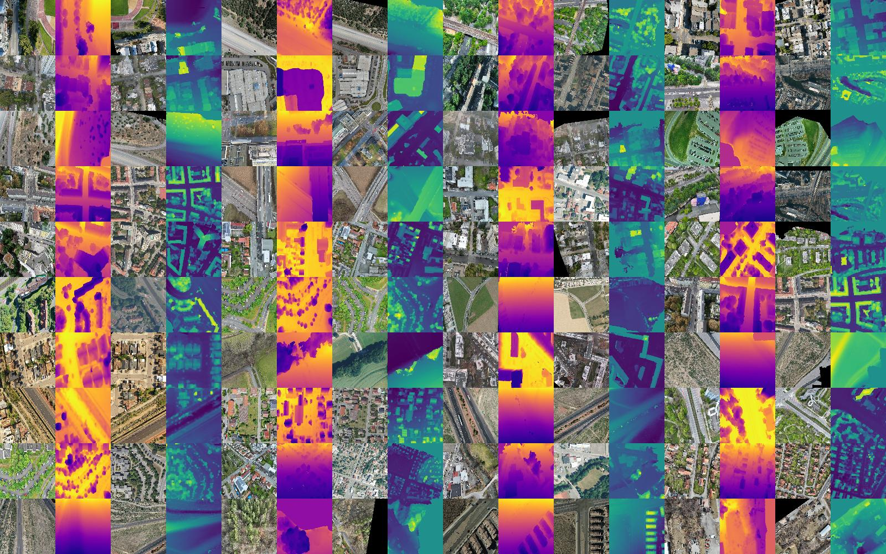

The OrthoLoC Dataset
Description
OrthoLoC is a comprehensive UAV localization dataset that addresses key limitations in existing benchmarks. Our dataset comprises 16.4k real UAV images spanning 47 locations across 19 regions in Germany and the United States, captured in diverse environmental contexts including urban, suburban, industrial, rural, and highway scenes. Each sample provides a query image with precise ground-truth 6-DoF pose, camera intrinsics, and rich 3D scene representations: point maps, 3D keypoints, local meshes, and aligned 2.5D geodata rasters derived from multiple sources.
Download
- Download the dataset from here
- Size: 287.3GB
License
The OrthoLoC dataset is licensed under CC BY-NC-SA 4.0


Geodata used for augmenting the dataset to close the gap of cross-domain are issued from multiple open
geoportals in Europe which have the CC BY 4.0 license. Please consult the following list for the
specific license of the data used in this dataset:
- Bavaria: geodaten.bayern.de/opengeodata
- Berlin: gdi.berlin.de
- Hesse: gds.hessen.de
- Hamburg: geoportal-hamburg.de
- North Rhine-Westphalia: opengeodata.nrw.de
- Baden-Württemberg: opengeodata.lgl-bw.de